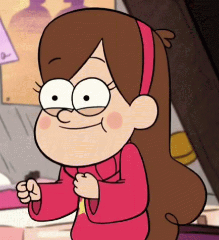
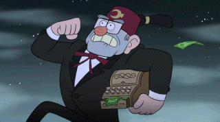
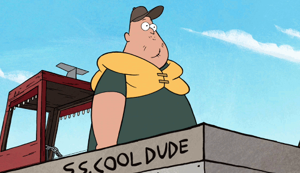
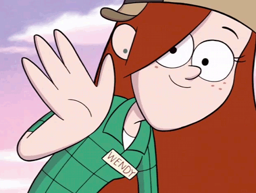

Personagens Principais

Dipper
é um garoto de 12 anos e muito curioso, esperto e cheio de imaginação. Com sua irmã gêmea, Mabel, ele se aventura para descobrir os segredos de Gravity Falls.
Frase: "Quando a vida te der limões, faça um suco e o use para desenhar o mapa do tesouro com tinta invisível. Isso realmente funciona! De verdade!"
Talentos especiais: Caça a monstros, resolução de enigmas.

Mabel
Cheia de energia e otimista, Mabel tira o melhor de cada situação com um grande sorriso bobo... enquanto atormenta seu irmão gêmeo, Dipper.
Frase: “Quando a vida te der limões, desenhe rostos nos limões e enrole-os em uma manta. Tãtãtãtã! Agora você tem limões bebês.”
Talentos especiais: chamados animais, habilidades de tricô que iriam colocar uma vovó no chinelo.

Tivô Stan
O tio-avô de Mabel e Dipper, Tivô Stan, cuida do Cabana do Mistério, uma armadilha para turista cheia de esquisitices questionáveis. Quando ele está levando turistas ou dormindo, Dipper e Mabel escapam para explorar os segredos da cidade.
Frase: “Quando a vida te der limões, chame-os de ‘laranjas amarelas’ e venda pelo dobro do preço”.
Talento especiais: Consegue se coçar em dois lugares ao mesmo tempo.

Soos
Soos é um adorável homem que trabalha na loja de presentes de Cabana do Mistério. Ele gosta de estar no centro da ação tanto ao lado de Dipper e Mabel em suas aventuras quanto ajudando Tivô Stan em seu último plano. Além das crianças, ele é a única pessoa que vê todas as coisas estranhas acontecendo em Gravity Falls.
Frase: Nenhum
Talentos Especiais: Nenhum

Wendy
Wendy é a paixão de Dipper – uma garota alta da escola que trabalha meio-período na Cabana do Mistério. Sair com Wendy pode ser divertido, até ela começar a falar demais.
Frase: Nenhum
Talentos Especiais: Nenhum
Fim Da Página